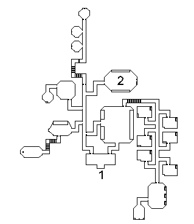

| Dragoon's Keep | |
| 1. | Entrance |
| 2. | This is the main chamber, this is also where you will find the Mordred Dagger, that is the lost arifact that Zoltan Phelps from Free Haven is seeking. |
There is not much worth noting here except for the dagger. The Keep is full of Armored Knights, and rats. I believe the verterans have just over 200 hit points a peice.
I suggest you return the dagger, even though it is very nice, and quite valuable (20,000). Zoltan gives it back anyway.
Leave us a messagemgrounds@hotmail.com